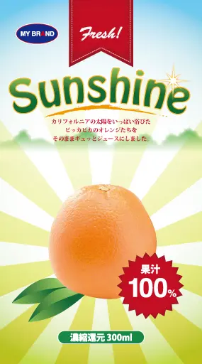

Illustrator 作品制作
オレンジジュース「Sunshine」販促用デザイン
- 
| 解説 |
本作品は、架空の飲料メーカーMY BRAND社より発売されるオレンジジュース「Sunshine」の販促用デザインとして制作したものです。背景には太陽の光をイメージした放射状のデザインを使用し、商品の名前である「Sunshine（太陽の光）」とリンクさせることで、フレッシュさやエネルギッシュな印象を強調しております。 中央に配置したオレンジの画像はリアルな質感を持たせ、果汁100%であることをアピールする赤いエンブレムを添えることで、商品の品質と信頼性を視覚的に訴求しております。また、「カリフォルニアの太陽をいっぱい浴びた～」という説明文を入れることで、産地の魅力と自然な美味しさを引き立てています。 |
|---|---|
| 目的 |
本作品の目的は、消費者に「飲んでみたい」と思わせる魅力的なビジュアルデザインを通じて、商品の認知度と購買意欲を高めることにあります。商品の特徴である「果汁100%」「フレッシュ感」「自然由来の品質」を、直感的に伝えられるデザイン構成を意識しました。 さらに、店頭ポスターやWeb広告など、さまざまな販促媒体に展開できる汎用性のあるデザインを目指しました。 |
| ターゲット |
本商品のターゲットは、健康志向の高い消費者層や、日常的にフルーツジュースを楽しむ幅広い年齢層の方々です。特に、自然志向・品質重視のライフスタイルを持つ20～40代の大人世代を中心に、朝食や仕事の合間などで気軽に楽しめる飲料として訴求しております。 |
| 使用ツール | Adobe Illustrator |